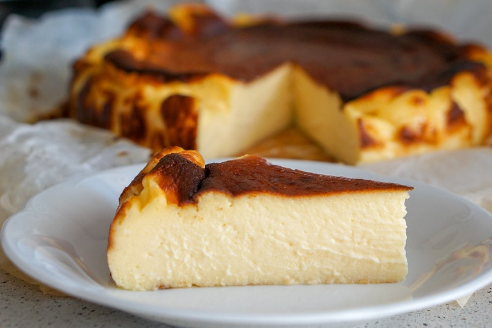

Description
This cheesecake is the alter ego to the classic New York–style cheesecake with a press-in cookie crust. Inspired by a Basque version, this is the cheesecake that wants to get burnt, cracked, and cooked at high heat. Which also means this is the cheesecake that’s impossible to mess up.
Ingredients
- 2.2 lbs Philadelphia cream cheese 1 kg. Note: you can also sub any other cream cheese, such as mascarpone. Works best at room temperature.
- 7 eggs
- 2 cups sugar 400g. Note: for a slightly less sweet cheesecake use only 1.5 to 1.75 cups (300-350g)
- 1 tablespoon of flour
- 6.5 fl oz heavy cream 200ml or 4/5 of a cup.
Steps
- Preheat the oven to 410°F (210°C).
- Using an electric mixer, whisk, or a metal spoon (the classic La Viña way!) combine all the ingredients in a large bowl until smooth and creamy.
- Line a 10 inch (25 cm) springform pan or round baking pan with enough wax or parchment paper that it extends past the edges of the pan. This will help you remove the cheesecake from the pan later on, and will prevent it from sticking. You can use a smaller pan for a higher cheesecake but may need to bake longer so that the center isn’t too runny.
- Bake on the center rack for 35-50 minutes. The cake will rise quite a bit but don’t worry — it will settle when it’s out of the oven. I like my cheesecake just cooked through, so I generally bake 40 minutes and if it isn’t quite burnt enough on top I turn the heat up for another minute or two, being careful it doesn’t burn too much! If you like the center very runny, remove at 35 minutes.
- When the cake is brown and almost burnt looking, turn the oven off. The center shouldn’t be completely set. It will wiggle a lot when you move the pan (like Jello!)
- Let it start to cool gradually by leaving it out on the counter. After an hour or so, move the cake to the fridge to cool completely.
- After a few hours in the refrigerator (overnight is even better), your cheesecake should be chilled enough to cut. Don’t remove the cake from the parchment paper until it’s ready to be cut, plated, and devoured (as it can start to lose its shape).